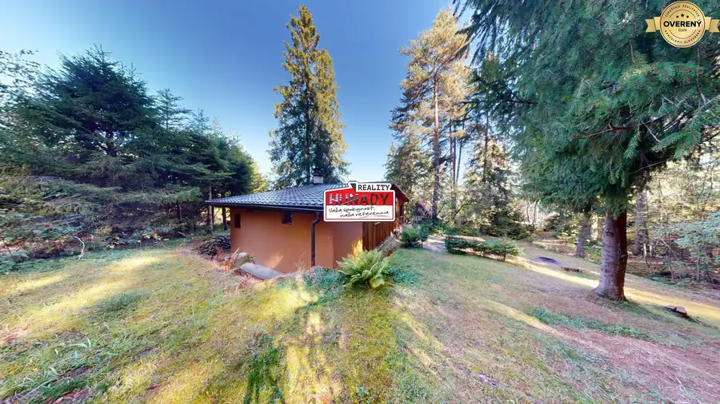
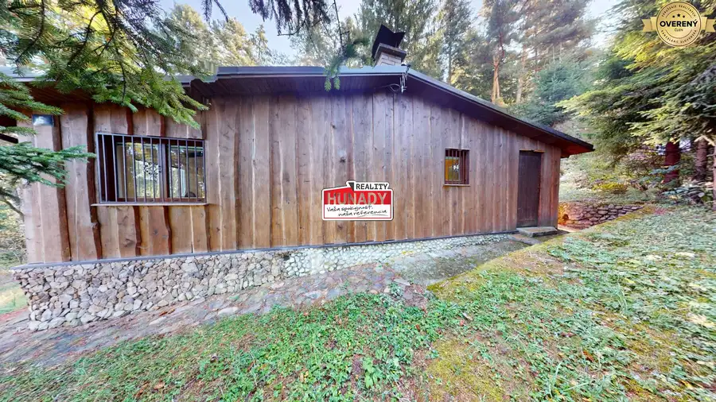
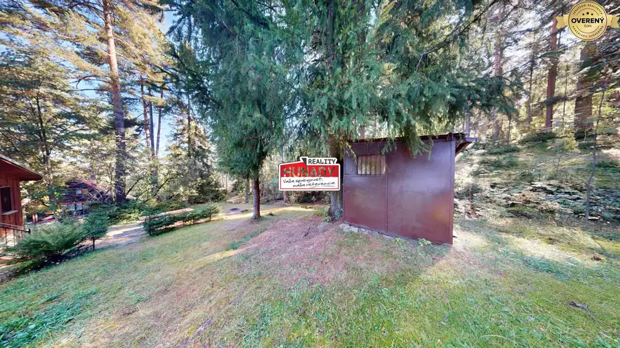
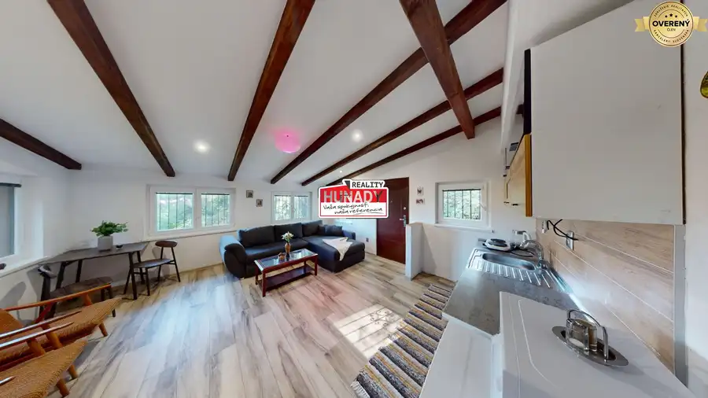
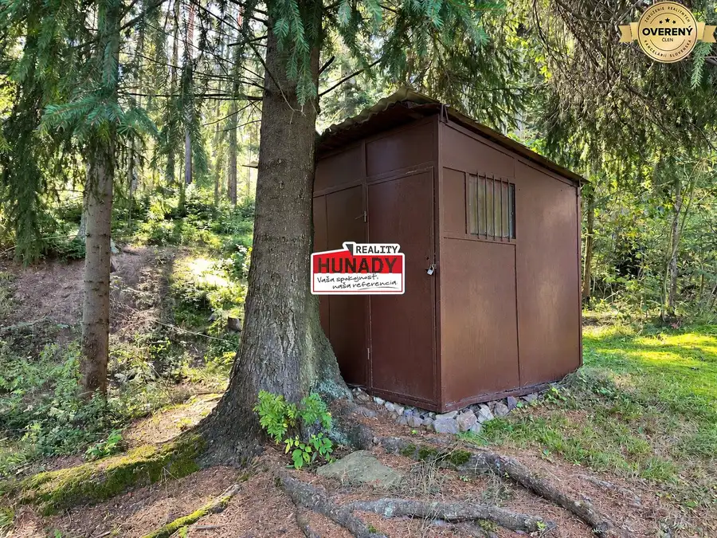
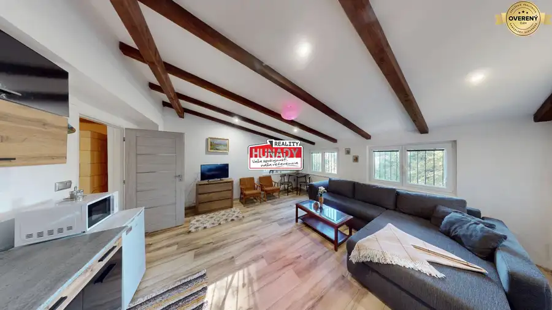
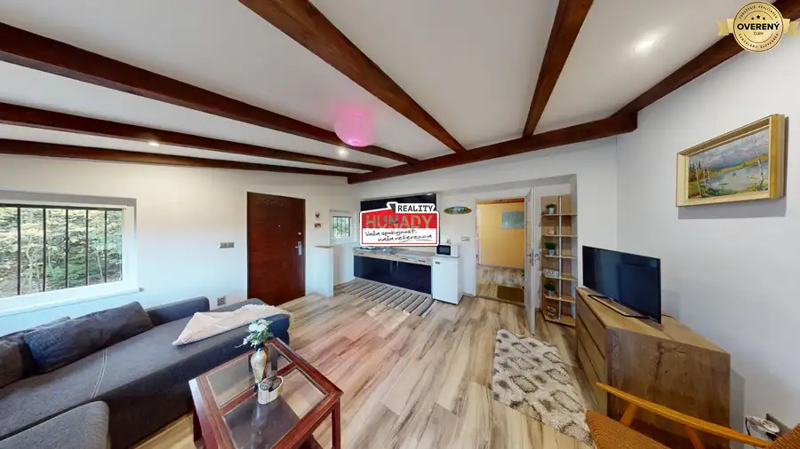
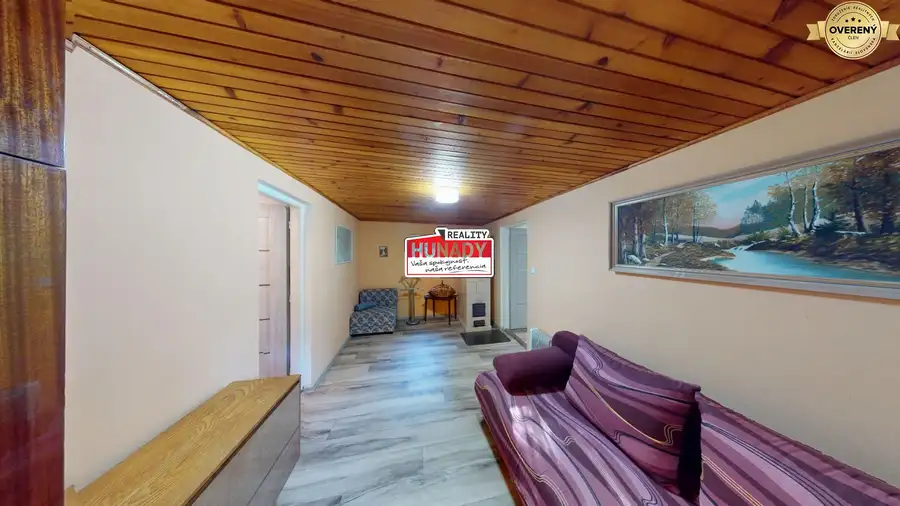

(50 m²) CHATA V OBJATÍ PRÍRODY V GÁNOVCIACH
Gánovce









- Dispozícia2-izbový
- Plocha50 m²
- Poschodie0. z 1
- Stavpo rekonštrukcii
- Vlastníctvoosobné
O nehnuteľnosti
EXKLUZÍVNE ponúkame na PREDAJ murovanú rekreačnú chatu nachádzajúcu sa v pokojnom prostredí chatovej osady Filice, obklopenú prírodou, potôčikom a lesmi.
Ak hľadáte miesto, kde môžete na chvíľu vypnúť od každodenného ruchu, užívať si pokoj, čerstvý vzduch a pritom zostať na dosah mesta, táto nehnuteľnosť môže byť zaujímavou voľbou.
Chata je postavená z pórobetónových tvárnic. V priebehu rokov bola postupne upravovaná a zveľaďovaná, pričom jej časť bola približne pred 5 rokmi pristavaná.
Predáva sa so zariadením - súčasťou je chladnička s mrazničkou, dvojplatnička, mikrovlnná rúra a TV s anténou a základnými programami.
K dispozícii je tiež dreváreň a technická miestnosť.
VODA A TECHNICKÉ VYBAVENIE
Na pozemku sa nachádza studňa s čerpadlom. Ohrev vody zabezpečuje bojler a odpad je riešený prostredníctvom septiku.
LOKALITA
Filice ponúkajú predovšetkým to, čo sa pri rekreačnej nehnuteľnosti hľadá najviac – pokoj, súkromie a bezprostredný kontakt s prírodou.
Okolie ponúka množstvo možností na aktívny oddych – pešiu turistiku, cykloturistiku, hubárčenie či zber lesných plodov, pričom neďaleká Kvetnica, Hranovnícka dubina a Zámčisko sú popretkávané turistickými trasami a náučnými chodníkmi a ponúkajú ďalšie možnosti na výlety v prírode.
V blízkosti sa nachádza aj železničná zastávka Gánovce, ktorá ponúka ďalšiu možnosť dopravy. Vlakom sa odtiaľ pohodlne dostanete aj smerom do Vysokých Tatier. Svoje miesto si tu nájdu tí, ktorí chcú voľné chvíle tráviť mimo mesta, no zároveň nechcú cestovať ďaleko.
Táto ponuka nie je o luxusnom rezorte. Je o vlastnom mieste na víkendy, opekačky, posedenia s rodinou, pobyt na čerstvom vzduchu a chvíle, keď jednoducho potrebujete vymeniť ruch mesta za pokoj lesa.
Pre viac informácií a dohodnutie osobnej obhliadky nás neváhajte kontaktovať. Obhliadku si dohodnete na telefónnom čísle .
Fotografie sú autorským dielom a majetkom realitnej kancelárie HUŇADY REALITY.
V cene je zahrnuté právne poradenstvo, vyhotovenie rezervačných a kúpnych zmlúv, úhrada správneho poplatku za návrh na vklad do katastra nehnuteľností a súčinnosť advokátskej kancelárie. V prípade potreby klientovi pomôžeme aj so zabezpečením financovania.
Parametre
- Rozloha pozemku
- 100 m²
- Zastavaná plocha
- 50 m²
- Celková rozloha
- 50 m²
- Úžitková plocha
- 50 m²
- Poschodie
- prízemie
- Počet poschodí
- 1
- Počet izieb
- 2
- Vlastníctvo
- osobné
- Stav
- po rekonštrukcii
- Status
- aktívne
- Odvoz odpadu
- áno
- Voda
- studňa
- El. napätie
- 230/400V
- Plyn
- nie
- Kanalizácia
- septik
- Kúpeľňa
- sprchovací kút
- Vykurovanie
- vlastné – kombinované
- Pivnica
- nie
- Inžinierske siete
- áno
- Postavené z
- Porotherm
- Zariadenie
- zariadený
- Strecha
- po rekonštrukcii
- Energetický certifikát
- nie
- Okná
- plastové
- Terén
- mierny svah
- Prístupová cesta
- neupravená cesta
- Dátum zverejnenia
- 2026-09-09
Kde to je
Mohlo by Vás zaujímať
 BytNové
135 000 €(56 m²) 2i BYT V CENTRE ZARIADENÝ + 2 PIVNICE
Spišská Nová Ves
2-izbový50 m²1. podlažie
BytNové
135 000 €(56 m²) 2i BYT V CENTRE ZARIADENÝ + 2 PIVNICE
Spišská Nová Ves
2-izbový50 m²1. podlažie
 BytNové
119 000 €REZERVOVANÉ !!! (68 m²) 3i BYT S POTENCIÁLOM NA MIERI
Spišská Nová Ves
3-izbový65 m²6. podlažie
BytNové
119 000 €REZERVOVANÉ !!! (68 m²) 3i BYT S POTENCIÁLOM NA MIERI
Spišská Nová Ves
3-izbový65 m²6. podlažie
 ZáhradyNové
37 999 €NOVINKA !!! (305 m²) ZÁHRADKA ZA TESCOM
Spišská Nová Ves
305 m²
ZáhradyNové
37 999 €NOVINKA !!! (305 m²) ZÁHRADKA ZA TESCOM
Spišská Nová Ves
305 m²